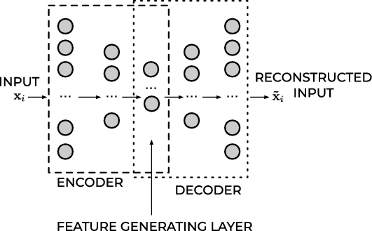

Advanced machine learning and data analysis for the physical sciences
March 12, 2024
Plans for the week March 11-15
- Discussion of Autoencoders (AEs)
- Links between Principal Component Analysis (PCA) and AE
- Video of Lecture
- Whiteboard notes
Reading recommendations
- Goodfellow et al chapter 14.
- Rashcka et al. Their chapter 17 contains a brief introduction only.
- Deep Learning Tutorial on AEs from Stanford University
- Building AEs in Keras
- Introduction to AEs in TensorFlow
- Grosse, University of Toronto, Lecture on AEs
- Bank et al on AEs
- Baldi and Hornik, Neural networks and principal component analysis: Learning from examples without local minima, Neural Networks 2, 53 (1989)
Autoencoders: Overarching view
Autoencoders are artificial neural networks capable of learning efficient representations of the input data (these representations are called codings) without any supervision (i.e., the training set is unlabeled). These codings typically have a much lower dimensionality than the input data, making autoencoders useful for dimensionality reduction.
Autoencoders learn to encode the input data into a lower-dimensional representation, and then decode it back to the original data. The goal of autoencoders is to minimize the reconstruction error, which measures how well the output matches the input. Autoencoders can be seen as a way of learning the latent features or hidden structure of the data, and they can be used for data compression, denoising, anomaly detection, and generative modeling.
Powerful detectors
More importantly, autoencoders act as powerful feature detectors, and they can be used for unsupervised pretraining of deep neural networks.
Lastly, they are capable of randomly generating new data that looks very similar to the training data; this is called a generative model. For example, you could train an autoencoder on pictures of faces, and it would then be able to generate new faces. Surprisingly, autoencoders work by simply learning to copy their inputs to their outputs. This may sound like a trivial task, but we will see that constraining the network in various ways can make it rather difficult. For example, you can limit the size of the internal representation, or you can add noise to the inputs and train the network to recover the original inputs. These constraints prevent the autoencoder from trivially copying the inputs directly to the outputs, which forces it to learn efficient ways of representing the data. In short, the codings are byproducts of the autoencoder’s attempt to learn the identity function under some constraints.
First introduction of AEs
Autoencoders were first introduced by Rumelhart, Hinton, and Williams in 1986 with the goal of learning to reconstruct the input observations with the lowest error possible.
Why would one want to learn to reconstruct the input observations? If you have problems imagining what that means, think of having a dataset made of images. An autoencoder would be an algorithm that can give as output an image that is as similar as possible to the input one. You may be confused, as there is no apparent reason of doing so. To better understand why autoencoders are useful we need a more informative (although not yet unambiguous) definition.
An autoencoder is a type of algorithm with the primary purpose of learning an "informative" representation of the data that can be used for different applications (see Bank, D., Koenigstein, N., and Giryes, R., Autoencoders) by learning to reconstruct a set of input observations well enough.
Autoencoder structure
Autoencoders are neural networks where the outputs are its own inputs. They are split into an encoder part which maps the input \( \boldsymbol{x} \) via a function \( f(\boldsymbol{x},\boldsymbol{W}) \) (this is the encoder part) to a so-called code part (or intermediate part) with the result \( \boldsymbol{h} \)
$$
\boldsymbol{h} = f(\boldsymbol{x},\boldsymbol{W})),
$$
where \( \boldsymbol{W} \) are the weights to be determined. The decoder parts maps, via its own parameters (weights given by the matrix \( \boldsymbol{V} \) and its own biases) to the final ouput
$$
\tilde{\boldsymbol{x}} = g(\boldsymbol{h},\boldsymbol{V})).
$$
The goal is to minimize the construction error.
Schematic image of an Autoencoder

More on the structure
In most typical architectures, the encoder and the decoder are neural networks since they can be easily trained with existing software libraries such as TensorFlow or PyTorch with back propagation.
In general, the encoder can be written as a function \( g \) that will depend on some parameters
$$
\mathbf{h}_{i} = g(\mathbf{x}_{i}),
$$
where \( \mathbf{h}_{i}\in\mathbb{R}^{q} \) (the latent feature representation) is the output of the encoder block where we evaluate it using the input \( \mathbf{x}_{i} \).
Decoder part
Note that we have \( g:\mathbb{R}^{n}\rightarrow\mathbb{R}^{q} \) The decoder and the output of the network \( \tilde{\mathbf{x}}_{i} \) can be written then as a second generic function of the latent features
$$
\tilde{\mathbf{x}}_{i} = f\left(\mathbf{h}_{i}\right) = f\left(g\left(\mathbf{x}_{i}\right)\right),
$$
where \( \tilde{\mathbf{x}}_{i}\mathbf{\in }\mathbb{R}^{n} \).
Training an autoencoder simply means finding the functions \( g(\cdot) \) and \( f(\cdot) \) that satisfy
$$
\textrm{arg}\min_{f,g}< \left[\Delta (\mathbf{x}_{i}, f(g\left(\mathbf{x}_{i}\right))\right]>.
$$
Typical AEs
The standard setup is done via a standard feed forward neural network (FFNN), or what is called a Feed Forward Autoencoder.
A typical FFNN architecture has an odd number of layers and is symmetrical with respect to the middle layer.
Typically, the first layer has a number of neurons \( n_{1} = n \) which equals the size of the input observation \( \mathbf{x}_{\mathbf{i}} \).
As we move toward the center of the network, the number of neurons in each layer drops in some measure. The middle layer usually has the smallest number of neurons. The fact that the number of neurons in this layer is smaller than the size of the input, is often called the bottleneck.
Feed Forward Autoencoder

Mirroring
In almost all practical applications, the layers after the middle one are a mirrored version of the layers before the middle one. For example, an autoencoder with three layers could have the following numbers of neurons:
\( n_{1} = 10 \), \( n_{2} = 5 \) and then \( n_{3} = n_{1} = 10 \) where the input dimension is equal to ten.
All the layers up to and including the middle one, make what is called the encoder, and all the layers from and including the middle one (up to the output) make what is called the decoder.
If the FFNN training is successful, the result will be a good approximation of the input \( \tilde{\mathbf{x}}_{i}\approx\mathbf{x}_{i} \).
What is essential to notice is that the decoder can reconstruct the input by using only a much smaller number of features than the input observations initially have.
Output of middle layer
The output of the middle layer \( \mathbf{h}_{\mathbf{i}} \) are also called a learned representation of the input observation \( \mathbf{x}_{i} \).
The encoder can reduce the number of dimensions of the input observation and create a learned representation \( \mathbf{h}_{\mathbf{i}}\mathbf{) } \) of the input that has a smaller dimension \( q < n \).
This learned representation is enough for the decoder to reconstruct the input accurately (if the autoencoder training was successful as intended).
Activation Function of the Output Layer
In autoencoders based on neural networks, the output layer's activation function plays a particularly important role. The most used functions are ReLU and Sigmoid.
ReLU
The ReLU activation function can assume all values in the range \( \left[0,\infty\right] \). As a remainder, its formula is
$$
\textrm{ReLU}\left(x\right) = \max\left(0,x\right).
$$
This choice is good when the input observations \(\mathbf{x}_{i}\) assume a wide range of positive values. If the input \( \mathbf{x}_{i} \) can assume negative values, the ReLU is, of course, a terrible choice, and the identity function is a much better choice. It is then common to replace to the ReLU with the so-called Leaky ReLu or just modified ReLU.
The ReLU activation function for the output layer is well suited for cases when the input observations \(\mathbf{x}_{i}\) assume a wide range of positive real values.
Sigmoid
The sigmoid function \( \sigma \) can assume all values in the range \( [0,1] \),
$$
\sigma\left(x\right) =\frac{1}{1+e^{-x}}.
$$
This activation function can only be used if the input observations \( \mathbf{x}_{i} \) are all in the range \( [0,1] \) or if you have normalized them to be in that range. Consider as an example the MNIST dataset. Each value of the input observation \( \mathbf{x}_{i} \) (one image) is the gray values of the pixels that can assume any value from 0 to 255. Normalizing the data by dividing the pixel values by 255 would make each observation (each image) have only pixel values between 0 and 1. In this case, the sigmoid would be a good choice for the output layer's activation function.
Cost/Loss Function
If an autoencoder is trying to solve a regression problem, the most common choice as a loss function is the Mean Square Error
$$
L_{\textrm{MSE}} = \textrm{MSE} = \frac{1}{n}\sum_{i = 1}^{n}\left\vert\vert\mathbf{x}_{i}-\tilde{\mathbf{x}}_{i}\right\vert\vert^{2}_2.
$$
Binary Cross-Entropy
If the activation function of the output layer of the AE is a sigmoid function, thus limiting neuron outputs to be between 0 and 1, and the input features are normalized to be between 0 and 1 we can use as loss function the binary cross-entropy. This cots/loss function is typically used in classification problems, but it works well for autoencoders. The formula for it is
$$
L_{\textrm{CE}} = -\frac{1}{n}\sum_{i = 1}^{n}\sum_{j = 1}^{p}[x_{j,i} \log\tilde{x}_{j,i}+\left(1-x_{j,i}\right)\log (1-\tilde{x}_{j,i})].
$$
Reconstruction Error
The reconstruction error (RE) is a metric that gives you an indication of how good (or bad) the autoencoder was able to reconstruct the input observation \( \mathbf{x}_{i} \). The most typical RE used is the MSE
$$
\textrm{RE}\equiv \textrm{MSE} = \frac{1}{n}\sum_{i = 1}^{n}\left\vert\vert\mathbf{x}_{i}-\tilde{\mathbf{x}}_{i}\right\vert\vert^{2}_2.
$$
Dimensionality reduction and links with Principal component analysis
The hope is that the training of the autoencoder can unravel some useful properties of the function \( f \). They are often trained with only single-layer neural networks (although deep networks can improve the training) and are essentially given by feed forward neural networks.
Linear functions
If the function \( f \) and \( g \) are given by a linear dependence on the weight matrices \( \boldsymbol{W} \) and \( \boldsymbol{V} \), we can show that for a regression case, by miminizing the mean squared error between \( \boldsymbol{x} \) and \( \tilde{\boldsymbol{x}} \), the autoencoder learns the same subspace as the standard principal component analysis (PCA).
In order to see this, we define then
$$
\boldsymbol{h} = f(\boldsymbol{x},\boldsymbol{W}))=\boldsymbol{W}\boldsymbol{x},
$$
and
$$
\tilde{\boldsymbol{x}} = g(\boldsymbol{h},\boldsymbol{V}))=\boldsymbol{V}\boldsymbol{h}=\boldsymbol{V}\boldsymbol{W}\boldsymbol{x}.
$$
AE mean-squared error
With the above linear dependence we can in turn define our optimization problem in terms of the optimization of the mean-squared error, that is we wish to optimize
$$
\min_{\boldsymbol{W},\boldsymbol{V}\in {\mathbb{R}}}\frac{1}{n}\sum_{i=0}^{n-1}\left(x_i-\tilde{x}_i\right)^2=\frac{1}{n}\vert\vert \boldsymbol{x}-\boldsymbol{V}\boldsymbol{W}\boldsymbol{x}\vert\vert_2^2,
$$
where we have used the definition of a norm-2 vector, that is
$$
\vert\vert \boldsymbol{x}\vert\vert_2 = \sqrt{\sum_i x_i^2}.
$$
Dimensionality reduction
This is equivalent to our functions learning the same subspace as the PCA method. This means that we can interpret AEs as a dimensionality reduction method. To see this, we need to remind ourselves about the PCA method.
What is the Principal Component Analysis (PCA)?
PCA is a linear transformation that finds the directions of maximum variance in the data, and projects the data onto a lower-dimensional space. These directions are called principal components, and they are orthogonal to each other. PCA can be seen as a way of compressing the data by discarding the components that have low variance and retain the most important ones. PCA can be applied to both supervised and unsupervised learning problems, and it is often used for data visualization, feature extraction, and noise reduction.
A linear autoencoder can be shown to be equal to the PCA. In this lectures we will try to expose these ideas.
Basic ideas of the PCA
The principal component analysis deals with the problem of fitting a low-dimensional affine subspace \( S \) of dimension \( d \) much smaller than the total dimension \( D \) of the problem at hand (our data set). Mathematically it can be formulated as a statistical problem or a geometric problem. In our discussion of the theorem for the classical PCA, we will stay with a statistical approach. Historically, the PCA was first formulated in a statistical setting in order to estimate the principal component of a multivariate random variable.
Ingredients of the PCA
We have a data set defined by a design/feature matrix \( \boldsymbol{X} \) (see below for its definition)
- Each data point is determined by \( p \) extrinsic (measurement) variables
- We may want to ask the following question: Are there fewer intrinsic variables (say \( d < < p \)) that still approximately describe the data?
- If so, these intrinsic variables may tell us something important and finding these intrinsic variables is what dimension reduction methods do.
A good read is for example Vidal, Ma and Sastry.
Introducing the Covariance and Correlation functions
Before we discuss the PCA theorem, we need to remind ourselves about the definition of the covariance and the correlation function. These are quantities
Suppose we have defined two vectors \( \hat{x} \) and \( \hat{y} \) with \( n \) elements each. The covariance matrix \( \boldsymbol{C} \) is defined as
$$
\boldsymbol{C}[\boldsymbol{x},\boldsymbol{y}] = \begin{bmatrix} \mathrm{cov}[\boldsymbol{x},\boldsymbol{x}] & \mathrm{cov}[\boldsymbol{x},\boldsymbol{y}] \\
\mathrm{cov}[\boldsymbol{y},\boldsymbol{x}] & \mathrm{cov}[\boldsymbol{y},\boldsymbol{y}] \\
\end{bmatrix},
$$
where for example
$$
\mathrm{cov}[\boldsymbol{x},\boldsymbol{y}] =\frac{1}{n} \sum_{i=0}^{n-1}(x_i- \overline{x})(y_i- \overline{y}).
$$
Covariance matrix
With this definition and recalling that the variance is defined as
$$
\mathrm{var}[\boldsymbol{x}]=\frac{1}{n} \sum_{i=0}^{n-1}(x_i- \overline{x})^2,
$$
we can rewrite the covariance matrix as
$$
\boldsymbol{C}[\boldsymbol{x},\boldsymbol{y}] = \begin{bmatrix} \mathrm{var}[\boldsymbol{x}] & \mathrm{cov}[\boldsymbol{x},\boldsymbol{y}] \\
\mathrm{cov}[\boldsymbol{x},\boldsymbol{y}] & \mathrm{var}[\boldsymbol{y}] \\
\end{bmatrix}.
$$
More on the covariance
The covariance takes values between zero and infinity and may thus lead to problems with loss of numerical precision for particularly large values. It is common to scale the covariance matrix by introducing instead the correlation matrix defined via the so-called correlation function
$$
\mathrm{corr}[\boldsymbol{x},\boldsymbol{y}]=\frac{\mathrm{cov}[\boldsymbol{x},\boldsymbol{y}]}{\sqrt{\mathrm{var}[\boldsymbol{x}] \mathrm{var}[\boldsymbol{y}]}}.
$$
The correlation function is then given by values \( \mathrm{corr}[\boldsymbol{x},\boldsymbol{y}] \in [-1,1] \). This avoids eventual problems with too large values. We can then define the correlation matrix for the two vectors \( \boldsymbol{x} \) and \( \boldsymbol{y} \) as
$$
\boldsymbol{K}[\boldsymbol{x},\boldsymbol{y}] = \begin{bmatrix} 1 & \mathrm{corr}[\boldsymbol{x},\boldsymbol{y}] \\
\mathrm{corr}[\boldsymbol{y},\boldsymbol{x}] & 1 \\
\end{bmatrix},
$$
In the above example this is the function we constructed using pandas.
Reminding ourselves about Linear Regression
In our derivation of the various regression algorithms like Ordinary Least Squares or Ridge regression we defined the design/feature matrix \( \boldsymbol{X} \) as
$$
\boldsymbol{X}=\begin{bmatrix}
x_{0,0} & x_{0,1} & x_{0,2}& \dots & \dots x_{0,p-1}\\
x_{1,0} & x_{1,1} & x_{1,2}& \dots & \dots x_{1,p-1}\\
x_{2,0} & x_{2,1} & x_{2,2}& \dots & \dots x_{2,p-1}\\
\dots & \dots & \dots & \dots \dots & \dots \\
x_{n-2,0} & x_{n-2,1} & x_{n-2,2}& \dots & \dots x_{n-2,p-1}\\
x_{n-1,0} & x_{n-1,1} & x_{n-1,2}& \dots & \dots x_{n-1,p-1}\\
\end{bmatrix},
$$
with \( \boldsymbol{X}\in {\mathbb{R}}^{n\times p} \), with the predictors/features \( p \) refering to the column numbers and the entries \( n \) being the row elements.
Rewriting the matrix \( \boldsymbol{X} \)
We can rewrite the design/feature matrix in terms of its column vectors as
$$
\boldsymbol{X}=\begin{bmatrix} \boldsymbol{x}_0 & \boldsymbol{x}_1 & \boldsymbol{x}_2 & \dots & \dots & \boldsymbol{x}_{p-1}\end{bmatrix},
$$
with a given vector
$$
\boldsymbol{x}_i^T = \begin{bmatrix}x_{0,i} & x_{1,i} & x_{2,i}& \dots & \dots x_{n-1,i}\end{bmatrix}.
$$
Simple Example
With these definitions, we can now rewrite our \( 2\times 2 \) correlation/covariance matrix in terms of a moe general design/feature matrix \( \boldsymbol{X}\in {\mathbb{R}}^{n\times p} \). This leads to a \( p\times p \) covariance matrix for the vectors \( \boldsymbol{x}_i \) with \( i=0,1,\dots,p-1 \)
$$
\boldsymbol{C}[\boldsymbol{x}] = \begin{bmatrix}
\mathrm{var}[\boldsymbol{x}_0] & \mathrm{cov}[\boldsymbol{x}_0,\boldsymbol{x}_1] & \mathrm{cov}[\boldsymbol{x}_0,\boldsymbol{x}_2] & \dots & \dots & \mathrm{cov}[\boldsymbol{x}_0,\boldsymbol{x}_{p-1}]\\
\mathrm{cov}[\boldsymbol{x}_1,\boldsymbol{x}_0] & \mathrm{var}[\boldsymbol{x}_1] & \mathrm{cov}[\boldsymbol{x}_1,\boldsymbol{x}_2] & \dots & \dots & \mathrm{cov}[\boldsymbol{x}_1,\boldsymbol{x}_{p-1}]\\
\mathrm{cov}[\boldsymbol{x}_2,\boldsymbol{x}_0] & \mathrm{cov}[\boldsymbol{x}_2,\boldsymbol{x}_1] & \mathrm{var}[\boldsymbol{x}_2] & \dots & \dots & \mathrm{cov}[\boldsymbol{x}_2,\boldsymbol{x}_{p-1}]\\
\dots & \dots & \dots & \dots & \dots & \dots \\
\dots & \dots & \dots & \dots & \dots & \dots \\
\mathrm{cov}[\boldsymbol{x}_{p-1},\boldsymbol{x}_0] & \mathrm{cov}[\boldsymbol{x}_{p-1},\boldsymbol{x}_1] & \mathrm{cov}[\boldsymbol{x}_{p-1},\boldsymbol{x}_{2}] & \dots & \dots & \mathrm{var}[\boldsymbol{x}_{p-1}]\\
\end{bmatrix}.
$$
The Correlation Matrix
The correlation matrix
$$
\boldsymbol{K}[\boldsymbol{x}] = \begin{bmatrix}
1 & \mathrm{corr}[\boldsymbol{x}_0,\boldsymbol{x}_1] & \mathrm{corr}[\boldsymbol{x}_0,\boldsymbol{x}_2] & \dots & \dots & \mathrm{corr}[\boldsymbol{x}_0,\boldsymbol{x}_{p-1}]\\
\mathrm{corr}[\boldsymbol{x}_1,\boldsymbol{x}_0] & 1 & \mathrm{corr}[\boldsymbol{x}_1,\boldsymbol{x}_2] & \dots & \dots & \mathrm{corr}[\boldsymbol{x}_1,\boldsymbol{x}_{p-1}]\\
\mathrm{corr}[\boldsymbol{x}_2,\boldsymbol{x}_0] & \mathrm{corr}[\boldsymbol{x}_2,\boldsymbol{x}_1] & 1 & \dots & \dots & \mathrm{corr}[\boldsymbol{x}_2,\boldsymbol{x}_{p-1}]\\
\dots & \dots & \dots & \dots & \dots & \dots \\
\dots & \dots & \dots & \dots & \dots & \dots \\
\mathrm{corr}[\boldsymbol{x}_{p-1},\boldsymbol{x}_0] & \mathrm{corr}[\boldsymbol{x}_{p-1},\boldsymbol{x}_1] & \mathrm{corr}[\boldsymbol{x}_{p-1},\boldsymbol{x}_{2}] & \dots & \dots & 1\\
\end{bmatrix}.
$$
Numpy Functionality
The Numpy function np.cov calculates the covariance elements using the factor \( 1/(n-1) \) instead of \( 1/n \) since it assumes we do not have the exact mean values. The following simple function uses the np.vstack function which takes each vector of dimension \( 1\times n \) and produces a \( 2\times n \) matrix \( \boldsymbol{W} \)
$$
\boldsymbol{W}^T = \begin{bmatrix} x_0 & y_0 \\
x_1 & y_1 \\
x_2 & y_2\\
\dots & \dots \\
x_{n-2} & y_{n-2}\\
x_{n-1} & y_{n-1} &
\end{bmatrix},
$$
which in turn is converted into into the \( 2\times 2 \) covariance matrix \( \boldsymbol{C} \) via the Numpy function np.cov(). We note that we can also calculate the mean value of each set of samples \( \boldsymbol{x} \) etc using the Numpy function np.mean(x). We can also extract the eigenvalues of the covariance matrix through the np.linalg.eig() function.
# Importing various packages
import numpy as np
n = 100
x = np.random.normal(size=n)
print(np.mean(x))
y = 4+3*x+np.random.normal(size=n)
print(np.mean(y))
W = np.vstack((x, y))
C = np.cov(W)
print(C)
Correlation Matrix again
The previous example can be converted into the correlation matrix by simply scaling the matrix elements with the variances. We should also subtract the mean values for each column. This leads to the following code which sets up the correlations matrix for the previous example in a more brute force way. Here we scale the mean values for each column of the design matrix, calculate the relevant mean values and variances and then finally set up the \( 2\times 2 \) correlation matrix (since we have only two vectors).
import numpy as np
n = 100
# define two vectors
x = np.random.random(size=n)
y = 4+3*x+np.random.normal(size=n)
#scaling the x and y vectors
x = x - np.mean(x)
y = y - np.mean(y)
variance_x = np.sum(x@x)/n
variance_y = np.sum(y@y)/n
print(variance_x)
print(variance_y)
cov_xy = np.sum(x@y)/n
cov_xx = np.sum(x@x)/n
cov_yy = np.sum(y@y)/n
C = np.zeros((2,2))
C[0,0]= cov_xx/variance_x
C[1,1]= cov_yy/variance_y
C[0,1]= cov_xy/np.sqrt(variance_y*variance_x)
C[1,0]= C[0,1]
print(C)
We see that the matrix elements along the diagonal are one as they should be and that the matrix is symmetric. Furthermore, diagonalizing this matrix we easily see that it is a positive definite matrix.
The above procedure with numpy can be made more compact if we use pandas.
Using Pandas
We whow here how we can set up the correlation matrix using pandas, as done in this simple code
import numpy as np
import pandas as pd
n = 10
x = np.random.normal(size=n)
x = x - np.mean(x)
y = 4+3*x+np.random.normal(size=n)
y = y - np.mean(y)
X = (np.vstack((x, y))).T
print(X)
Xpd = pd.DataFrame(X)
print(Xpd)
correlation_matrix = Xpd.corr()
print(correlation_matrix)
Links with the Design Matrix
We can rewrite the covariance matrix in a more compact form in terms of the design/feature matrix \( \boldsymbol{X} \) as
$$
\boldsymbol{C}[\boldsymbol{x}] = \frac{1}{n}\boldsymbol{X}^T\boldsymbol{X}= \mathbb{E}[\boldsymbol{X}^T\boldsymbol{X}].
$$
To see this let us simply look at a design matrix \( \boldsymbol{X}\in {\mathbb{R}}^{2\times 2} \)
$$
\boldsymbol{X}=\begin{bmatrix}
x_{00} & x_{01}\\
x_{10} & x_{11}\\
\end{bmatrix}=\begin{bmatrix}
\boldsymbol{x}_{0} & \boldsymbol{x}_{1}\\
\end{bmatrix}.
$$
Computing the Expectation Values
If we then compute the expectation value
$$
\mathbb{E}[\boldsymbol{X}^T\boldsymbol{X}] = \frac{1}{n}\boldsymbol{X}^T\boldsymbol{X}=\begin{bmatrix}
x_{00}^2+x_{01}^2 & x_{00}x_{10}+x_{01}x_{11}\\
x_{10}x_{00}+x_{11}x_{01} & x_{10}^2+x_{11}^2\\
\end{bmatrix},
$$
which is just
$$
\boldsymbol{C}[\boldsymbol{x}_0,\boldsymbol{x}_1] = \boldsymbol{C}[\boldsymbol{x}]=\begin{bmatrix} \mathrm{var}[\boldsymbol{x}_0] & \mathrm{cov}[\boldsymbol{x}_0,\boldsymbol{x}_1] \\
\mathrm{cov}[\boldsymbol{x}_1,\boldsymbol{x}_0] & \mathrm{var}[\boldsymbol{x}_1] \\
\end{bmatrix},
$$
where we wrote
$$\boldsymbol{C}[\boldsymbol{x}_0,\boldsymbol{x}_1] = \boldsymbol{C}[\boldsymbol{x}]$$
to indicate that this the covariance of the vectors \( \boldsymbol{x} \) of the design/feature matrix \( \boldsymbol{X} \).
It is easy to generalize this to a matrix \( \boldsymbol{X}\in {\mathbb{R}}^{n\times p} \).
Towards the PCA theorem
We have that the covariance matrix (the correlation matrix involves a simple rescaling) is given as
$$
\boldsymbol{C}[\boldsymbol{x}] = \frac{1}{n}\boldsymbol{X}^T\boldsymbol{X}= \mathbb{E}[\boldsymbol{X}^T\boldsymbol{X}].
$$
Let us now assume that we can perform a series of orthogonal transformations where we employ some orthogonal matrices \( \boldsymbol{S} \). These matrices are defined as \( \boldsymbol{S}\in {\mathbb{R}}^{p\times p} \) and obey the orthogonality requirements \( \boldsymbol{S}\boldsymbol{S}^T=\boldsymbol{S}^T\boldsymbol{S}=\boldsymbol{I} \). The matrix can be written out in terms of the column vectors \( \boldsymbol{s}_i \) as \( \boldsymbol{S}=[\boldsymbol{s}_0,\boldsymbol{s}_1,\dots,\boldsymbol{s}_{p-1}] \) and \( \boldsymbol{s}_i \in {\mathbb{R}}^{p} \).
More details
Assume also that there is a transformation \( \boldsymbol{S}^T\boldsymbol{C}[\boldsymbol{x}]\boldsymbol{S}=\boldsymbol{C}[\boldsymbol{y}] \) such that the new matrix \( \boldsymbol{C}[\boldsymbol{y}] \) is diagonal with elements \( [\lambda_0,\lambda_1,\lambda_2,\dots,\lambda_{p-1}] \).
That is we have
$$
\boldsymbol{C}[\boldsymbol{y}] = \mathbb{E}[\boldsymbol{S}^T\boldsymbol{X}^T\boldsymbol{X}T\boldsymbol{S}]=\boldsymbol{S}^T\boldsymbol{C}[\boldsymbol{x}]\boldsymbol{S},
$$
since the matrix \( \boldsymbol{S} \) is not a data dependent matrix. Multiplying with \( \boldsymbol{S} \) from the left we have
$$
\boldsymbol{S}\boldsymbol{C}[\boldsymbol{y}] = \boldsymbol{C}[\boldsymbol{x}]\boldsymbol{S},
$$
and since \( \boldsymbol{C}[\boldsymbol{y}] \) is diagonal we have for a given eigenvalue \( i \) of the covariance matrix that
$$
\boldsymbol{S}_i\lambda_i = \boldsymbol{C}[\boldsymbol{x}]\boldsymbol{S}_i.
$$